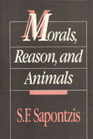

<body bgcolor="#FFFFFF" text="#000000" link="#0000FF" vlink="#CC0000" alink="#CC0000"><center><hr width="350" size="1" align="center" noshade>Criticizes the common belief that we are entitled to exploit animals for our benefit because they are not as rational as people<hr width="350" size="1" align="center" noshade><p><a href="https://cdcshoppingcart.uchicago.edu/Cart/ChicagoBook.aspx?ISBN=9780877224938&&PRESS=temple" target="_top">Buy this book!</a> | <a href="https://cdcshoppingcart.uchicago.edu/Cart/Cart.aspx?PRESS=temple" target="_top">View Cart</a> | <a href="https://cdcshoppingcart.uchicago.edu/Cart/Cart.aspx?PRESS=temple" target="_top">Check Out</a></p><p></p></center><!--none//--><h1>Morals, Reason, and Animals</h1>
<h3>S. F. Sapontzis</h3>
<P>cloth 0-87722-493-5 $64.50, Jul 87, <FONT COLOR=#990033>Out of Stock Unavailable</FONT>
<br>paper 0-87722-961-9 $38.95, Mar 92, <FONT COLOR=#990033>Available</FONT>
<BR> 328 pp
</P><BLOCKQUOTE><I>"Direct and highly readable.... Sapontzis tries to show that certain differences between humans and animals, including differences in reason, even if they have moral import, do not make the case against animals that many people think they do and do not underwrite many facets of our present treatment of animals."</I>
<br>&#151<b>R. G. Frey</b>, <I>Ethics</I><I></I></BLOCKQUOTE>
<p>This book criticizes the common belief that we are entitled to exploit animals for our benefit because they are not as rational as people. After discussing the moral (in)significance of reason in general, the author proceeds to develop a clear, commonsensical conception of what "animal rights" is about and why everyday morality points toward the liberation of animals as the next logical step in Western moral progress. The book evaluates criticisms of animal rights that have appeared in recent philosophical literature and explains the consequences of animal liberation for our diet, science, and treatment of the environment.
<p>The issue of animal rights has become of increasing philosophical and popular importance over the past decade. <I>Morals. Reason, and Animals</I> is the first extensive, second-generation contribution to this debate. Focusing exclusively on the fundamental philosophical issues, Sapontzis both undermines the arguments that have been raised against animal rights and constructs a rebuttal that avoids the pitfalls encountered by earlier defenses.
<BR>&nbsp;<h2>Excerpt</h2><P>Excerpt available at <a href="http://www.temple.edu/tempress">www.temple.edu/tempress</a></p>
<BR>&nbsp;<h2>Reviews</h2>
<p><I>"In my opinion only five authors have made a significant philosophical contribution to the endeavor of placing animals in ethical theory: Singer, Frey, Regan, Mary Midgley, and S. F. Sapontzis. [</I>Morals, Reason, and Animals<I> is] an excellent, underappreciated work."</I>
<br>&#151<b>David DeGrazia</b>, <I>Kennedy Institute of Ethics Journal</I>
<p><I>"Sapontzis presents a strong case for including animals in the moral community, and his work is an important and unique contribution to animal rights literature."</I>
<br>&#151<b><I>The Animals' Agenda</I></b>
<p><I>"Sapontzis advances a bold and provocative defense for the liberation of animals, arguing that the requirement of rationality&#151in its morally relevant sense&#151does not rule out the possibility of extending moral rights to animals.... The views articulated here are original and, at points, controversial...making this an important book. Moreover, the style is extremely clear and readable. Highly recommended."</I>
<br>&#151<b><I>Choice</I></b>
<p><I>"In this work, Sapontzis provides a philosophically sophisticated and far-ranging contribution to the current debate on animal liberation.... Given the wide range of arguments, authors, and topics discussed, [this] may be the most comprehensive work to date on animal liberation."</I>
<br>&#151<b><I>Anthrozois</I></b>
<p><I>"This is an excellent contribution to the animal rights movement. The author�s clear, simple, readable, and often witty style makes the book quite accessible to anyone with serious interest in the field.... </I>Morals, Reason, and Animals<I> is a highly original, creative, and important book."</I>
<br>&#151<b>Bernard Rollin</b>, Colorado State University
<p><I>"This book offers a number of fresh perspectives and stimulating new arguments in a subject area that is dauntingly dense with articles and books [Sapontzis] has managed to present a broad variety of subtle philosophical issues in a clear and forceful manner...."</I>
<br>&#151<b>Thomas Benson</b>, Academic Dean, St. Andrews Presbyterian College
<BR>&nbsp;<h2>Contents</h2><P>
<p>Preface
<br>Acknowledgments
<p><b>Part I: The Moral (In)Significance of Reason</b>
<p>1. Why Should I Be Rational?
<br><I>"Rationality" and Its Alternatives &#149
The Methodological Counterattack &#149
The Moral of the Story</I>
<p>2. Where Reason Enters In&#151and Where It Doesn�t
<br><I>Incidentally Good Actions &#149
Ulterior Motives &#149
Acting Out of Context &#149
Moral Agents, Philosophers, and Judges &#149
Summary and Conclusion</I>
<p>3. Being Rational and Acting Morally
<br><I>What "Rational" Refers To &#149
Can Only Rational Beings Be Moral Agents? &#149
Acting for the Right Reason &#149
Acting on Principle and Acting Morally &#149
The Free, the Rational, and the Moral &#149
Everyday Freedom &#149
Pursuing Ideals vs. the Value of Virtue</I>
<p>4. People and Persons
<br><I>Metaphysical vs. Moral Persons &#149
The Humanist Principle &#149
The Logico-linguistic Defense of Humanism &#149
The Phenomenological Defense of Humanism &#149
The Transcendental Defense of Humanism &#149
The Consequential Defense of Humanism &#149
Conclusion</I>
<p><b>Part II: "Animal Rights"?</b>
<p>5. What Liberating Animals Is and Isn�t About
<br><I>The Moral Sense of "Animal" &#149
Applying the Rhetoric of Liberation to Animals &#149
Applying the Concept of Equality to Animals &#149
Applying the Rhetoric of Rights to Animals &#149
Is Animal </I>Liberation<I> an Affront to Human Liberation? &#149
Summary</I>
<p>6. Three Reasons for Liberating Animals
<br><I>Liberating Animals and Developing Moral Character &#149
Liberating Animals and Making the World a Happier Place &#149
Liberating Animals and Being Fair &#149
Conclusion</I>
<p><b>Part III: Answering Some Objections to Liberating Animals</b>
<p>7. Can Animals Have Interests?
<br><I>Language and Interests &#149
"Having an Interest" &#149
Language and Desire &#149
Language and Belief &#149
The Psychological (In)Significance of Grammar &#149
Language and Truth &#149
Language and Self-Consciousness &#149
Conclusion &#149
Reason and the Moral Significance of Interests &#149
Being Rational and Having Interests &#149
Having Interests and Moral Standing</I>
<p>8. Moral Community and Animal Rights
<br><I>The Reciprocity Requirement &#149
The Agency Requirement &#149
The Relations Requirement &#149
The Humanist Requirement &#149
Conclusion</I>
<p>9. The Misfortune of Death
<br><I>Why (Supposedly) Only Rational Beings Can Have a Right to Life &#149
Having vs. Taking an Interest in Life &#149
Having Interests and Having Rights &#149
Having an Interest in Life and the Right to Life &#149
Suffering a Loss and the Awareness of Loss &#149
Summary and Conclusion</I>
<p>10. The Replacement Argument
<br><I>The (In)Significance of the Replacement Argument &#149
Six Ways of Evaluating Moral Standing &#149
Describing the Six Ways &#149
Six Evaluations of the Replacement Argument &#149
Total Population vs. Prior Existence Utilitarianism &#149
Prior Existence Utilitarianism and Obligations to Future Generations &#149
Summary</I>
<p><b>Part IV: A Few Consequences</b>
<p>11. Vegetarianism
<br><I>The Simple Answer &#149
Exploiting, Slaughtering, and Harvesting &#149
Exploiting, Killing, and Scavenging &#149
Starvation</I>
<p>12. Whither Animal Research?
<br><I>Can Animals Consent to Research�? &#149
Should Research Be Done Only with Those Who Consent? &#149
Are Humans a Superior Form of Life? &#149
Should Superiors Exploit Their Inferiors? &#149
Summary and Conclusion</I>
<p>13. Saving the Rabbit from the Fox
<br><I>The Variety of Absurdity &#149
Ought Implies Can &#149
"Avoidable" Suffering &#149
Conclusion</I>
<p>14. Plants and Things
<br><I>Environmental Ethics and Inherent Value &#149
Environmental Crisis and the (Supposed) Necessity of Inherent Value &#149
The Variety of Goodness and the (Supposed) Necessity of Inherent Value &#149
Conclusion &#149
Environmental Ethics and Ecological Holism &#149
The Biotic "Community" vs. Animal Liberation &#149
The Arbitrariness of Total Holism &#149
Environmental Ethics vs. Personal Preferences &#149
Morality and the Affirmation of Life &#149
Summary &#149
The Good of Nonsentient Things &#149
The Environmental Ethics of Animal Liberation</I>
<p>Notes
<br>Bibliography
<br>Index
</P><BR>&nbsp;<H2>About the Author(s)</H2>
<P><b>S. F. Sapontzis</b> is Professor of Philosophy at California State University, Hayward.</P>
<BR><H2>Subject Categories</H2>
<p><A HREF="/tempress/philosophy.html" TARGET="_top">Philosophy and Ethics</a>
<BR><A HREF="/tempress/animal_soc.html" TARGET="_top">Animals and Society</a>
</p>
<p align="center"><a href="https://cdcshoppingcart.uchicago.edu/Cart/ChicagoBook.aspx?ISBN=9780877224938&&PRESS=temple" target="_top">Buy this book!</a> | <a href="https://cdcshoppingcart.uchicago.edu/Cart/Cart.aspx?PRESS=temple" target="_top">View Cart</a> | <a href="https://cdcshoppingcart.uchicago.edu/Cart/Cart.aspx?PRESS=temple" target="_top">Check Out</a></p><p><font face="Arial" size="1"><a href="copyright.html" onMouseOver="window.status='Web Copyright Policy';return true;" onMouseOut="window.status=''" title="Web Copyright Policy">&copy;</a> 2015 <a href="http://www.temple.edu" target="new" onMouseOver="window.status='Link to Temple University home page';return true;" onMouseOut="window.status=''" title="Link to Temple University home page">Temple University</a>. All Rights Reserved. http://www.temple.edu/tempress/titles/509_reg.html</font></p>